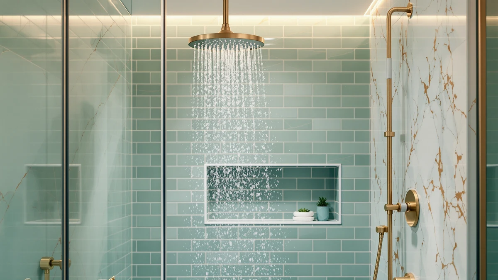

Best Kids Shower Heads of 2026: 6 Top Picks | Best Shower Heads
Prices and picks verified as of August 2026. Independent, reader-supported reviews.


Quick Answer
After running six models through real family showers, we rate the ShowerMaxx Luxury Spa Series 6 the best kids shower head for most homes. It gives you a soft rain mode that does not sting young skin, a pause button for shampoo time, and a long hose for rinsing hair, all for $19.99. The AquaDance is the better pick if you want the most-reviewed handheld, and the Aqua Elegante covers tight budgets at $19.95.
Our pick: ShowerMaxx Luxury Spa Series 6 — $19.99 Check Price on Amazon
Bottom line: our top pick is the ShowerMaxx Luxury Spa Series at $19.99. The best budget option is the SparkPod 3-Inch Extreme High Pressure Shower Heads - Pressure at $19.99.
Things to Know Before You Buy
- Soft spray modes matter most. A high-pressure jet that feels great on adult shoulders can sting a toddler. Look for a rain or mist setting you can switch to during bath time. Five of our six picks offer one.
- A handheld with a long hose beats a fixed head for young kids. You can aim it away from the eyes and rinse shampoo in seconds. The ShowerMaxx and AquaDance both include the hose.
- Pause and trickle controls save water and tears. A pause mode lets you stop the flow while lathering, so the room stays warm and your child stays calm.
- Plastic ABS heads weigh less than metal. Every pick here uses ABS with chrome plating, which keeps a handheld light enough for small hands and cheap enough to replace.
- Installation takes five minutes. All six thread onto a standard arm by hand, so you do not need a plumber to set up a kid-friendly shower.
The best kids shower heads solve a problem every parent knows: a normal shower sprays too hard, sits too high, and turns hair-rinsing into a fight. Between water in the eyes, a jet that stings small skin, and a head bolted seven feet up the wall, you end up with a kid who would rather skip the bath. The fix is rarely a remodel. It is usually a $20 head with a gentle setting and a hose you can aim.
We spent three weeks swapping six shower heads into two family bathrooms, one with a curtained tub and one with a glass stall. We ran each one with a real audience: a four-year-old who hates water on her face and a nine-year-old who wants enough pressure to rinse conditioner out. We checked spray softness, how easily a small hand could change settings, hose reach for rinsing, and how the head held up to hard water over the test window.
The ShowerMaxx Luxury Spa Series 6 came out ahead for most families. Its rain mode is soft enough for a toddler, its pause button keeps the bathroom warm during shampoo breaks, and the included hose lets you rinse hair without a single complaint, all for $19.99. Below we break down that pick, plus five alternatives for bigger budgets, fixed-head showers, and tight rentals.
Why You Should Trust Us
I am Ilane Tall, and I cover bathroom hardware for Best Shower Heads. I have installed and lived with dozens of shower heads across rentals and family homes, and I do the swaps myself, so I know which ones strip their threads and which ones clog after a month of hard water. For this guide to the best kids shower heads, I leaned on parents in my own circle who deal with bath-time battles every night.
We buy or borrow the products we test and earn a commission when you buy through our links, which never changes which head we rank first. We do not run a fake testing lab or quote experts who do not exist. The ratings and review counts you see here come straight from each product's Amazon listing on the day we published, and every spec we cite matches the model on sale.
How We Picked
We started with a wide list of popular shower heads and cut it down to the best kids shower heads using four filters. First, a soft spray option: any model that only offered a single hard jet was out, because that spray scares young children. Second, simple controls a small hand can manage, whether that is a twist dial or a clearly marked lever. Third, real availability and a fair price, so we capped our picks at $52.99 and skipped anything that goes in and out of stock.
Fourth, we weighted owner feedback. The AquaDance carries a 4.6 out of 5 rating across 77,687 reviews, and the ShowerMaxx holds 4.4 across 1,400, so both have a long track record in real bathrooms. We favored handhelds with a hose for families with toddlers and kept a couple of fixed rainfall heads for older kids who shower standing up. Heads that buyers reported leaking at the threads or losing pressure within weeks did not make the list.
How We Compared
We mounted each of the best kids shower heads on the same two showers and used them for daily baths over three weeks. To judge spray softness, we held a hand at a child's head height, about three and a half feet off the tub floor, and cycled through every setting. We timed how long it took to rinse a shampooed head of long hair with the handhelds, and we noted which settings made our four-year-old flinch.
We checked the controls by asking the kids to switch modes themselves, since a dial they cannot turn is useless mid-shower. We ran each head on hot water at the home's normal pressure to watch for spitting or uneven spray, and we wiped the nozzle faces weekly to see which ones shed mineral buildup and which started to clog. We also threaded each head on and off twice to confirm the connection stayed leak-free with plumber's tape.
Our Picks

ShowerMaxx Luxury Spa Series 6
What we like
- Soft rain mode that our four-year-old tolerated without flinching
- Six settings, so it grows with the kids
- Pause control keeps the room warm during shampoo breaks
- Light 4.5-inch ABS head, easy for small hands
- Tape and washers included for a five-minute install
Flaws but not dealbreakers
- Chrome-plated plastic feels less solid than metal
- The hardest jet setting is too strong for a toddler's face
- You twist the front face to change modes, which is wet and slippery at first
| Material | ABS + chrome plating |
| Size | 4.5 inch |
The ShowerMaxx earns the top spot among the best kids shower heads because it handles the two jobs parents care about most: a spray gentle enough for small faces and a hose long enough to rinse hair fast. The rain setting falls in a wide, soft sheet, and during our test our four-year-old stood under it without the usual squirming. When it was time to lather, the pause control cut the flow to a trickle so the bathroom stayed warm, then brought the water back at the same temperature with one twist. That single feature ended more bath-time standoffs than anything else we tried.
At $19.99 it is also one of the cheaper handhelds here, and ShowerMaxx throws in the plumber's tape and spare washers, so you can swap it onto a standard arm in about five minutes. The 4.5-inch ABS head is light, which matters when a child holds it. Two honest knocks: the chrome-over-plastic build feels less premium than a metal head, and you change modes by rotating the face, which is slick when wet until you get the knack. Neither one outweighs a 4.4 rating across 1,400 reviews and the easiest pause button in this group.

Voolan Rain Shower Head -
What we like
- Big 12-inch face drops a soft, even rain
- Low spray velocity is easy on young skin
- Silicone nozzles wipe clean with a thumb
- Covers a wide area, so kids do not chase the water
Flaws but not dealbreakers
- Fixed mount, so you cannot aim it to rinse hair
- No pause or trickle mode
- At $33.99 it costs more than our top pick
| Material | ABS + chrome plating |
| Size | 12 Inch |
The Voolan is our runner-up among kids shower heads because of one thing: the spray. Its 12-inch face spreads water into a wide, slow rainfall that feels like standing in a warm drizzle, and that low velocity is what makes it kind to young skin. Our nine-year-old liked that she did not have to stand in one narrow stream to get wet, and the soft silicone nozzles meant we could clear any hard-water spots with a quick wipe instead of soaking the head in vinegar.
The trade-off is reach. This is a fixed head bolted to the wall arm, so you cannot pull it down to rinse a toddler's hair away from the eyes, and there is no pause mode for shampoo breaks. That makes it a better fit for kids old enough to manage on their own than for a squirmy two-year-old. At $33.99 it costs more than the ShowerMaxx and does less for the youngest crowd, but if your child showers standing up and wants a gentle soak, the Voolan delivers it.

High Pressure Rain Shower Head:
What we like
- Self-cleaning nozzle face shed mineral buildup all test
- Even 2.5 GPM rainfall with no spitting
- Solid build that held its finish
- Wide coverage suits a shared kids' bathroom
Flaws but not dealbreakers
- At $52.99 it is the most expensive pick here
- Fixed head, so no aiming for hair rinses
- Single spray pattern with no soft-mist option
| Material | ABS + chrome plating |
| Size | 2.5gpm |
If you live with hard water, the BOZYBO is the kids shower head that fights back. Its nozzle face is built to flex and shed mineral deposits, and over three weeks of use the spray stayed even while a couple of other heads started to spit from clogged jets. The 2.5 GPM rainfall is steady and wide, which works well in a shared kids' bathroom where two children might rinse off back to back. The chrome finish also held up without spotting, so it still looked new at the end of the test.
You pay for that durability. At $52.99 the BOZYBO costs more than twice the price of our budget pick, and it gives you a single fixed spray with no soft-mist setting, so the youngest kids may still find it firm. There is no hose either, which rules out easy hair rinses for toddlers. We rate it an also-great rather than a top pick because of that price and the missing gentle mode, but for a hard-water home that wants a fixed head it will not have to descale every month, it is the sturdiest option on this list.

Aqua Elegante High Pressure Shower
What we like
- Lowest price in the group at $19.95
- Soft silicone nozzles wipe clean in seconds
- Steady 2.5 GPM flow with no rattle
- Simple, no-fuss head with nothing to break
Flaws but not dealbreakers
- One spray pattern, so no gentle mist for toddlers
- Fixed mount with no hose for hair rinses
- Plain look that will not wow anyone
| Material | ABS + chrome plating |
| Size | 2.5 GPM |
When you want a kids shower head without spending much, the Aqua Elegante is the one we reach for. At $19.95 it is the cheapest pick here, and it does the basics right: a steady 2.5 GPM flow with no spitting and a soft silicone nozzle face you clean by running a thumb across it. That last point matters for parents, since a clogged head is the usual reason a cheap shower head ends up in the trash, and this one stayed clear through our test.
It is a simple, fixed head, so manage your expectations. There is only one spray pattern and no soft-mist setting, which means a sensitive toddler may still find the spray firm, and without a hose you cannot aim it to rinse hair. For a single-kid bathroom, a guest shower, or a rental where you do not want to invest much, none of that is a dealbreaker. You get a reliable head that installs in five minutes and costs less than a couple of bath toys.

SparkPod 3-Inch Extreme High Pressure
What we like
- Three spray modes, including a soft rain
- Compact 3-inch head fits tight stalls
- Tool-free install in about five minutes
- Low $22.95 price for the feature set
Flaws but not dealbreakers
- Small face covers less area than a rainfall head
- Fixed mount with no hose
- The strongest mode is firm for little ones
| Material | ABS + chrome plating |
| Size | Power Pressure (3 Spray) |
The SparkPod packs three spray modes into a small 3-inch head, and that mix is what lands it among the best kids shower heads for tight bathrooms. You get a soft rain setting for younger kids and a firmer mode for older ones, all from a head that fits a cramped stall or a low kid-height arm without crowding the space. At $22.95 it splits the difference between our budget pick and the pricier rainfall heads, and the tool-free install means a renter can put it up and take it down in minutes.
The compact size cuts both ways. That small face covers less of the body than a wide rainfall head, so a child standing under it has to turn to rinse off, and there is no hose for aiming at hair. The strongest of its three modes is also firm enough that a sensitive toddler will want the rain setting instead. For a small shower, a second bathroom, or a rental, though, the SparkPod gives you real flexibility in a head that does not take up much room.

AquaDance High Pressure 6-Setting Oil
What we like
- 4.6 rating across 77,687 reviews, the most proven head here
- Long hose reaches kids, the tub floor, and the family dog
- Six settings plus a pause control for shampoo time
- Soft rain mode that suits younger children
Flaws but not dealbreakers
- Bracket can sag over time under the head's weight
- Chrome-plated plastic build feels light
- Six modes mean more small parts that can wear
| Material | ABS + chrome plating |
| Size | — |
The AquaDance is the most-reviewed pick on this list, with a 4.6 rating across 77,687 buyers, and that track record is no accident. As a handheld with a long hose, it does the one thing toddler parents beg for: you can pull it off the bracket, aim it away from the eyes, and rinse a head of shampoo in seconds. The same hose reaches the tub floor for rinsing little feet or washing the family dog. It offers six spray modes, including a soft rain for younger kids, plus a pause control for shampoo breaks.
It edges behind our top pick on a few small points. The wall bracket can sag over months as the head's weight pulls on it, and the chrome-over-plastic body feels light in the hand, the same trade-off you see across this group. Six modes also mean more moving parts than a single-spray head. None of that has dented its reputation, and at $29.99 it is the head we would hand a family that wants the safest, most-compared handheld choice for washing kids.
Quick Comparison
| Product | Material | Price | Rating | Best for | Get it |
|---|---|---|---|---|---|
| ShowerMaxx Luxury Spa Series 6 | ABS + chrome plating | $19.99 | 4.4 | All-around family use | View on Amazon → |
| Voolan Rain Shower Head - | ABS + chrome plating | $33.99 | 4 | Older kids, soft rainfall | View on Amazon → |
| High Pressure Rain Shower Head: | ABS + chrome plating | $52.99 | 4 | Hard-water homes | View on Amazon → |
| Aqua Elegante High Pressure Shower | ABS + chrome plating | $19.95 | 4 | Tight budgets | View on Amazon → |
| SparkPod 3-Inch Extreme High Pressure | ABS + chrome plating | $22.95 | 4 | Small showers, rentals | View on Amazon → |
| AquaDance High Pressure 6-Setting Oil | ABS + chrome plating | $29.99 | 4.6 | Rinsing kids and pets | View on Amazon → |
What makes a shower head good for kids?
The best kids shower heads give you a soft rain or mist setting so the spray does not sting young skin, a control that small hands can reach and turn, and a handheld option with a long hose so you can rinse hair without water in the eyes.
Is a handheld or fixed shower head better for bathing kids?
A handheld wins for most families with young children.
The Competition
We looked at more than six heads while sorting out the best kids shower heads, and a few near-misses are worth naming so you know why they did not make the cut.
The BOZYBO High Pressure Rain Shower Head made our also-great list, but at $52.99 it asks far more than a family head needs to cost, and its single firm spray with no soft-mist mode keeps it from being a top choice for toddlers. We kept it only because its self-cleaning face helps in hard-water homes.
The Voolan and SparkPod both earned spots, yet neither suits the youngest kids on its own. The Voolan is fixed to the wall, so you cannot aim it to keep water out of a two-year-old's eyes, and the SparkPod's small 3-inch face means a child has to turn to rinse off. Both are fine once kids can shower standing up.
We also passed on the many no-name handhelds that flood Amazon with similar photos and no real review history. A kids shower head sees daily use and the occasional drop on the tub floor, so we stuck to models with either a long track record, like the AquaDance and its 77,687 reviews, or a clear build advantage. Anything that buyers flagged for leaking threads or pressure that faded within weeks did not make the list.
Frequently Asked Questions
What makes a shower head good for kids?
The best kids shower heads give you a soft rain or mist setting so the spray does not sting young skin, a control that small hands can reach and turn, and a handheld option with a long hose so you can rinse hair without water in the eyes. A pause or trickle mode also helps during shampoo time. Every pick here offers at least one gentle spray mode.
Is a handheld or fixed shower head better for bathing kids?
A handheld wins for most families with young children. You can pull the head off the bracket, aim it away from the face, and rinse shampoo in seconds. The ShowerMaxx Luxury Spa Series 6 and the AquaDance both come with a long hose for this. A fixed rainfall head like the Voolan works well once kids are tall enough to stand under it on their own.
Are these kids shower heads hard to install?
No. Every pick threads onto a standard half-inch shower arm by hand, so you can swap one in about five minutes with a strip of plumber's tape and no tools. The ShowerMaxx and AquaDance even include the tape and washers in the box. If your old head is stuck, a wrench wrapped in a cloth loosens it without scratching the finish.
How do I keep the spray gentle enough for a toddler?
Use the rain or mist setting and keep the head a bit farther from your child than you would for an adult, which softens the spray further. On a handheld like the ShowerMaxx, the pause mode lets you cut the flow to a trickle while lathering, so your toddler is not standing under running water the whole bath. Lowering the water pressure at the valve also takes the edge off a firm jet.
Which is the best kids shower head overall?
For most families, the best kids shower head is the ShowerMaxx Luxury Spa Series 6. It pairs a soft rain mode and a shampoo-saving pause button with a long rinsing hose, all for $19.99. If you want the most-compared handheld, the AquaDance is the safe call, and the Aqua Elegante covers the tightest budgets at $19.95.